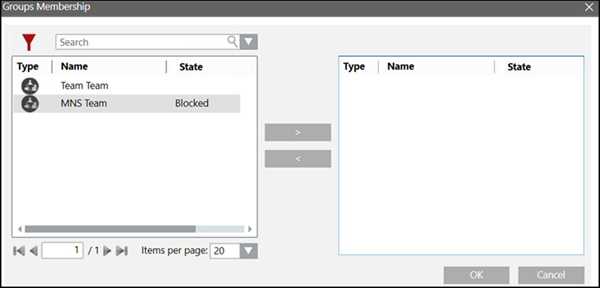
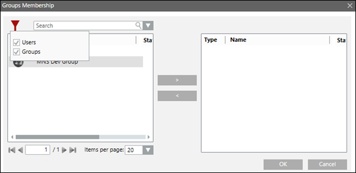

Recipient Groups
Create Recipient Groups
- Click Add Group .
- Select General and enter the name of the group.
- Select Members and click Add.
- The Groups Membership dialog box displays.

- Select the recipients to be associated with the group and click Move to move the selection to the text box on the left.
NOTE 1: Add a maximum of 1000 recipients to a recipient group.
NOTE 2: Click Filter to narrow the search based on the recipient type. Refer to steps 6 and 7 in the Update a Recipient Group section for detailed instructions. - Click OK.
- The Members list is updated with the selected recipients.
- Select Groups Membership and click Add.
NOTE 1: Refer a group to another group to build larger structures. However, it is not possible to have recursive groups where groups refer to each other.
NOTE 2: For detailed instructions on groups membership, see Create/Import Recipient User OR Create Recipient Devices. - Click Save
 .
.
- The recipient group is created.
Update a Recipient Group
- The recipient groups are created.
- Select Applications > Notification > Recipients.
- The Recipients Editor tab displays.
- Open the Recipients expander.
- The list of recipients displays.
- Select the recipient group to be updated.
- The details displays.
- Select General and update the Name.
- Select Members, click Filter
 to select the recipient type to be viewed.
to select the recipient type to be viewed.
- (Optional) Enter a keyword in the Search field.
- (Optional) To add a recipient to a group, do the following:
a. Click Add: The Group Membership dialog box displays.
b. Select the recipient and click Move to move the selection to the text box on the left.
to move the selection to the text box on the left.
c. Click OK. - (Optional) To remove a recipient from the group, select the required recipient from the Members list and click Remove.
- (Optional) To add the group to other recipient groups, do the following:
a. Select Groups Membership.
b. Click Add: The Group Membership dialog box displays.
c. Select the group to which you want to add this group.
d. Click Move to move the selection to the text box on the left.
e. Click OK. - (Optional) To remove the group from another recipient group, select the recipient group and click Remove.
- Click Save
 .
.
- The recipient group is saved with the updated details.
Delete a Recipient Group
- The recipient groups are created.
- Select Applications > Notification > Recipients.
- The Recipients Editor tab displays.
- Open the Recipients expander.
- The list of recipients displays.
- Select the Recipient Group to be deleted.
- Click Remove
 .
. - A confirmation message displays.
- Click Yes.
- The recipient group is deleted.